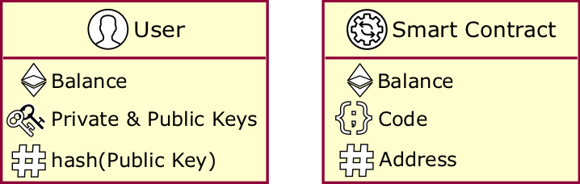

The Blockchain:
an overview
University of Modena and Reggio Emilia
Outline
- Why
- What
- How
- Deep dive: Ethereum
- Deep dive: smart contracts
- Conclusion
Why the blockchain?

Industrial perspective
- prominent use case: cryptocurrency
- money is the asset to keep track of
- identity management is crucial
- digital ledger
- encryption
- state machine replication
Way of dealing, essentially, with distributed asset tracking / identity management
A combination of distinct, already existing technologies
Research perspective
What can the blockchain do for distributed computing?
Consensus, fault tolerance, smart contracts, ...
Ethereum as the reference blockchain
What really is a blockchain?
BLOCKCHAIN $\neq$ BITCOIN
The Blockchain is a general concept describing a model for distributed & decentralised computation, that may be implemented in a variety of ways, within heterogeneous application domains, and with disparate goals
Bitcoin is one specific implementation, in one specific application domain (cryptocurrencies), with a set of specific goals (drop the bank system)
The blockchain at a glance
- P2P distributed ledger: shared, transparent, append-only registry of transactions
- Secure: hash functions, digital signatures, ...
- Replicated: no need for a trusted centralized authority
- Consensus-based: updates approved and propagated against Byzantine failures
Transactions
- is validated by peers
- if valid becomes permanent and immutable
- hash must certify transaction integrity
- signature must match issuer identity
- issuer's balance must be sufficient
A change of state in the blockchain: e.g. money transfer (in Bitcoin)
Once a transaction occurs, a block is created and
Validity:
Blocks

Unit of information in the blockchain
If a change is to be made, no block is altered or rewritten, a new one is created, instead, and chained (block-chain)
Hash
- same data always maps to same hash
- different data $\approx$always maps to a different hash
- easy to compute hash from data
- infeasible to compute data from hash
- increasing $N$ raises hasing difficulty $$block\_hash = f(index, timestamp, prev\_hash, data, nonce)$$
In general, alphanumeric string with some properties:
In blockchain, valid hash must have additional properties, e.g. $N$ of leading zeroes
Mining blocks
- as difficulty increases, $M$ of valid hashes decreases
- with lower $M$, it takes more processing power / time to find a valid hash
- miners are the ones who find the nonce, hence write blockchain history (the blocks)
- thus can harm the system, too, either by mistake or maliciously (lying)!
Finding a nonce (number) which produces a desired hash, to commit the block
"With great powers come great responsibilities"
Signature

Cryptographic tool to guarantee:
- integrity = info uncompromised
- authenticity = info comes from that user
- data hashed by user $U$ with private key $K$
- data sent to user $U'$ along with $U$ public key $P$
- $U'$ decodes data using $P$
[https://andersbrownworth.com/blockchain/public-private-keys/blockchain]
Consensus
- all nodes must be initialised with the same initial state
- inputs must be submitted to all replicas in the same order
- consistency: propagation of updates
- robustness: tolerance to nodes' failures
The blockchain is made of networked nodes executing the same state machine ($\approx$program)
Each node executes the same consensus protocol
Consensus guarantees
The distributed consensus problem
- each process $p_k$ has an input value $u_k$
- processes exchange inputs so that the outputs of all non-faulty processes become same output
- output $v$ must be equal to at least one $u_k$
Fundamental problem in distributed computing, core to leader election, mutual exclusion, distributed transactions, clock synchronization
Any consensus protocol should guarantee termination, agreement, and validity (if each $u_k = v$ then utput should be $v$)
No failures? Easy consensus in any system
Asynchronous network, deterministic algorithms? Consensus impossible if failures!
CAP theorem

For any distributed system, in case of failures (partitioning) choose amongst consistency and availability
Blockchain vs. FLP & CAP
Partitioning is intrinsic to blockchains, availability cannot be lost in many application domains, consistency is of paramount importance too, but there are ways we can have almost consistency
Research in blockchain contributed nice novel mechanisms to have eventual consistency (mostly, "Proof-of-whatever" techniques): "sooner or later, in finite (reasonable) time, things will become consistent"
Both problems are extremely relevant for blockchains, as its foundation is consistency without centralisation!
[https://andersbrownworth.com/blockchain/distributed]
[https://blockchaindemo.io]
The blockchain or a blockchain?
- users craft their own id vs. get an id from a certified authority
- Hyperledger Fabric vs. Ethereum
- quorum / leader election based
- robust to Byzantine failures or not
- competition-based approaches
Many factors influence how a blockchain actually work:
Permissioned vs. Permissionless
Which consensus?
Many others to define properties of a specific blockchain
Byzantine failures
- either by mistake (e.g. node crashing, disconnection)
- or on purpose (e.g. hostile node)
Another fundamental problem in distributed computing: achieve system reliability in the presence of faulty processes
Formalised as the two generals problem, then extended for $m \gt 2$
Theorem proved: for any $m$, consensus achieved if there are more than $3m$ participants with at most $m$ traitors
Why bother?
- e.g. re-order transactions for double spending
- e.g. compromise signatures to steal assets
- there is no central authority to recover!
- (distributed) Denial of Service (transaction fees help)
- sybil attack => impersonate N nodes (consensus help)
- eclipse attack => partition network, opens to other attacks (e.g. double-spending)
- routing attack => tamper with messages (hash & signatures help)
Due to the value of the asset stored in the ledger, hostile actors have economic incentives to, e.g., rewrite blocks
Byzantine Fault Tolerance (BFT) consensus helps against attacks:
How does the blockchain work?
Blocks lifecycle
- A user issues a transaction
- Signs it with private key $K$
- Server node propagates the transaction to neighbours
- The transaction is validated by peers and dropped if invalid
- Valid transactions are eventually executed producing a temporary block
- Eventually, if the consensus protocol confirms the block, it is appended to the blockchain

See it working: [https://blockchaindemo.io/]
BFT
- index = latest block index + 1
- previous hash field = latest block hash field
- hash meets difficulty requirement (e.g. no. of leading zeroes)
- its hash changes
- previous hash field of next block changes...
- ...hence its own hash changes, and so on!
When adding a new block, it needs to meet these requirements (at least):
Hence, changing a committed block leads to a cascade of invalid blocks
- alter transactions in one block and re-mine that block
- re-mine each subsequent block
- do so while impersonating many nodes (consensus!)
- do so fast enough to not let the blockchain evolve in the meantime (otherwise, more blocks to re-mine)
An attacker should:
Why be hostile? Why be nice?
In both cases: M. O. N. E. Y.
- hostile: assets stored on blockchain have value, hence changing ownership is appealing
- nice: miners are rewarded / compensated for their job, usually with a given amount of cryptocurrency
Setting aside the blockchain from a native cryptocurrency is far from trivial and currently subject of active research!
[https://youtu.be/BuTj9raHQOU]
Deep dive: Ethereum
Most of blockchain-related technical literature focus on a specific implementation
Until now we've been general, now we must choose a reference blockchain
Ethereum: probably the most mature, studied, and documented blockchain feturing smart contracts
"[...] alternative protocol for building decentralized applications [...]"
"Ethereum does this by building what is essentially the ultimate abstract foundational layer: a blockchain with a built-in Turing-complete programming language, allowing anyone to write smart contracts and decentralized applications where they can create their own arbitrary rules for ownership, transaction formats and state transition functions."
"Smart contracts, cryptographic 'boxes' that contain value and only unlock it if certain conditions are met, can also be built on top of the platform, with vastly more power than that offered by Bitcoin scripting because of the added powers of Turing-completeness, value-awareness, blockchain-awareness and state."
Not only users
Ethereum admits also smart contracts to issue transactions, besides users
Transactions
- Value transfers
- Deployment of a smart contract (SC)
- Invocation of a SC
Consensus
- Agreement on starting state
- Tolerant to Byzantine failures: Proof-of-Work (PoW)
PoW
- inconsistencies can temporarily arise in the form of "forks"
- the protocol takes care of making one eventually prevail on the others
- probability of block $B$ to be inconsistent $\rightarrow 0$ exponentially with the amount $N$ of blocks after $B$ (confirmations)
The first miner to find the nonce of a block propagates its proof and, if confirmed by others, gets the right to publish the new block and a reward (a transaction fee charged on the issuer)
The specific protocol is GHOST, which provides probabilistic eventual consistency
Forks
Common in blockchains since they run asynchronously: network delays => peers may see different blocks seemingly mined at same time, or same block at different times
Probability that two distinct sub-nets find blocks $\approx$simultaneously vanishes with the length of the chain
If an hostile sub-net create blocks faster than the nice one, it can rewrite history to overtake the honest chain
Faster $\approx$ hostile sub-net is "bigger" (in computatinal terms)
RAFT (Hyperledger Fabric)
- leader election
- log replication
- liveness maintainance + self-repair (= safety)
Consensus protocol easy to understand and implement (verifiability)
By contrast, GHOST is quite convoluted and implementations usually have some degrees of freedom
However, RAFT is not BFT
See it in action: http://thesecretlivesofdata.com/raft/
Deep dive: smart contracts
- stateful: encapsulate their own state
- user-defined: any user may publish a smart contract
- reactive: only activate on external input (transactions)
- immutable: smart contracts code cannot change
- secured: cryptographic measures as for blocks and transactions
- deterministic: always same outputs if given the same inputs and state
- decentralised: no centralised coordinator, concurrent execution
Smart contracts are arbitrary computations executed on the blockchain
State machine replication (SMR)
Each node in the blockchain network should behave the same, according to the protocol => each node executes the same "program" (the "blockchain application")
What if we replicate a program implementing an intepreter for other programs?
Each node of the blockchain executes arbitrary programs published through the blockchain API => Universal SMR
The blockchain becomes sort of middleware for decentralised computations!
SC lifecycle
- user instantiates a SC by publishing its source/byte-code (deployment transaction)
- once transaction confirmed, the SC instance is running on all blockchain nodes (replicas)
- users trigger SC with invocation transactions (and providing input)
- eventually, each replica receives the transaction and executes it
- a new block with the SC output is eventually confirmed by the consensus protocol (hence committed)
Deployment stage:
Invocation stage:
Check out, design, and test SC for free on Ethereum Remix IDE
Follow instructions at https://github.com/ethereum/remix-workshops
Conclusion
Main takeways
Hype aside, the blockchain truly is potentially disrupting: forget about cryptocurrencies, think about Electronic Medical Records auditing, supply chain tracking, etc.
Consensus plays critical role in defining properties: strength of eventual consistency, BFT or not, role and power of miners
Smart Contracts are still to be fully explored...
Personal interests
- can we do something else besides asset tracking and identity management?
- can we design more powerful smart contracts?
From the standpoint of distributed systems and artificial intelligence, what is the expressiveness of the blockchain?
1 --> Blockchain-based coordination
2 --> Agent-oriented smart contracts
Blockchain-based coordination
Can we implement Linda in Ethereum?
Goal: bring the blockchain to MAS world, gaining "for free" its safety and security properties
Blockchain-Based Coordination: Assessing the Expressive Power of Smart Contracts
Agent-oriented smart contracts
Can we design and implement smart contracts as agents?
Goal: bring agents to the blockchain world, gaining "for free" their greater expressiveness
Towards Agent-Oriented Blockchains: Autonomous Smart Contracts
Tenderfone blockchain (developed as master thesis!)
Thanks
for your attention
Questions?
University of Modena and Reggio Emilia
Useful resources
- https://andersbrownworth.com/blockchain/
- https://andersbrownworth.com/blockchain/public-private-keys/
- https://blockchaindemo.io/
- https://coindemo.io/
- http://thesecretlivesofdata.com/raft/
- Blockchain revolution without the blockchain? (on the origins of blockchain)
- Blockchains from a distributed computing perspective (distributed systems perspective)
Interactive tutorials:
Introductory papers:
On consensus: